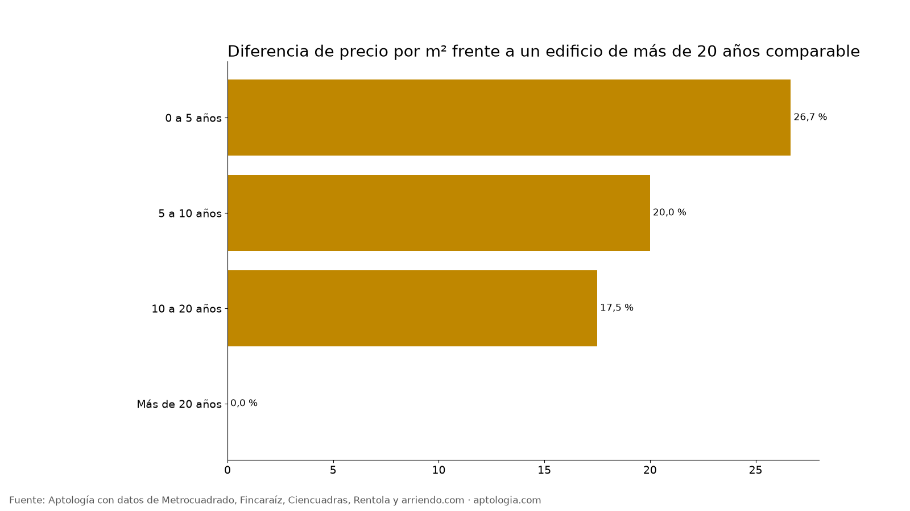

Edificio nuevo o viejo: cuánto cambia el arriendo según la antigüedad en Bogotá (2026)
Estudio con datos abiertos (CC BY 4.0). Versión original: https://www.aptologia.com/estudios/antiguedad-del-edificio-arriendo-bogota · DOI: 10.5281/zenodo.23344643
En Bogotá, un apartamento en un edificio de 0 a 5 años arrienda 26,7 % más por metro cuadrado que uno comparable en un edificio de más de 20 años. Pero los edificios viejos tienen apartamentos más grandes: 104 m² en la mediana frente a 42 m² en los nuevos.
Resumen: analizamos 15.369 apartamentos en arriendo únicos en Bogotá que publican la antigüedad del inmueble.
Actualizado: 13 de octubre de 2026 · Próxima actualización: mensual.

Por antigüedad
| Antigüedad | Avisos | Canon mediano | Área mediana | Por m² | Diferencia por m² vs. más de 20 años |
|---|---|---|---|---|---|
| 0 a 5 años | 4.154 | $2.000.000 | 42 m² | $53.333/m² | 26,7 % |
| 5 a 10 años | 3.116 | $3.000.000 | 60 m² | $54.823/m² | 20,0 % |
| 10 a 20 años | 3.303 | $4.665.000 | 86 m² | $54.167/m² | 17,5 % |
| Más de 20 años | 4.792 | $4.850.000 | 104 m² | $47.000/m² | 0,0 % |
Cómo usarlo para decidir: si buscas espacio por peso, los edificios de más de 20 años rinden más metros. Si priorizas acabados y amenidades, el nuevo cuesta esa prima.
Preguntas frecuentes
¿Es más caro arrendar en un edificio nuevo en Bogotá? Sí: 26,7 % por m² frente a un edificio de más de 20 años comparable, corte al 13 de octubre de 2026.
¿Los apartamentos viejos son más grandes? Sí: la mediana es 104 m² en edificios de más de 20 años y 42 m² en los de 0 a 5 años.
Metodología
- Fuente: base de ingesta diaria de Aptología, con avisos públicos de Metrocuadrado, Fincaraíz, Ciencuadras, Rentola y arriendo.com. Corte al 13 de octubre de 2026.
- Filtros: avisos vivos que pasan el control de calidad, en Bogotá, canon entre $400.000 y $30.000.000. Se excluyen TikTok y Facebook Marketplace.
- Duplicados: se deja un aviso por grupo de duplicados (el mismo inmueble en varios portales).
- Prima emparejada: se compara el precio por m² de avisos de cada rango de antigüedad frente a más de 20 años dentro de la misma celda de estrato × habitaciones (mínimo 8 avisos por lado) y se reporta la mediana ponderada de las diferencias. Así la prima no se confunde con estrato o tamaño. El atributo se detecta en el texto del aviso, por lo que solo cuentan avisos con descripción. La antigüedad se toma del tope del rango publicado por el portal.
- Limitaciones: son precios pedidos, no cerrados. Los barrios y localidades vienen tal como los escribe cada portal.
- Datos abiertos: datos.csv, licencia CC BY 4.0.
Cómo citar
Pinzón Pineda, D. M. (2026). Edificio nuevo o viejo: cuánto cambia el arriendo según la antigüedad en Bogotá (2026). Aptología. https://www.aptologia.com/estudios/antiguedad-del-edificio-arriendo-bogota. Datos: datos.csv, licencia CC BY 4.0.